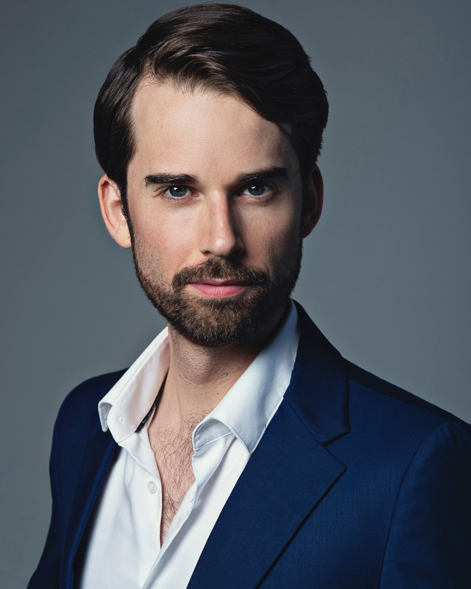

Spanning world premieres, signature operatic roles, and collaborations with leading companies.

'A versatile and charismatic performer', Jeremy Kleeman is a graduate of the Royal College of Music, a Samling Artist and a Melba Opera Trust Sambrook Scholar.
Recently, Jeremy Kleeman performed Bass Soloist in Rossini’s Stabat Mater for Tasmanian Symphony Orchestra and New Zealand Symphony Orchestra, and made role debuts as Schaunard in La bohème for Opera Queensland and Abimelech in Samson et Dalila for Melbourne Opera.
In 2024, he performed the title role in the world premiere of Jack Symonds’ Gilgamesh for Opera Australia and Sydney Chamber Opera. The Saturday Paper wrote, “Kleeman is well cast as Gilgamesh, singing with a rich, effortlessly noble bass-baritone laced with complex overtones.”
Jeremy has created several other roles; Toby Raven in George Palmer’s Cloudstreet, Reverend Stratton and Mr. Jeffris in Elliot Gyger’s Oscar and Lucinda, Albert the Pudding in Calvin Bowman’s The Magic Pudding, Husband in Hing-yan Chan’s Double Happiness, and Magus in baroque pastiche Voyage to the Moon for which he was nominated for Helpmann and Green Room Awards.
Recent operatic roles include Guglielmo in Così fan tutte for Opera Queensland; Captain Corcoran in HMS Pinafore and Sergeant of Police in Pirates of Penzance for State Opera of South Australia; and Figaro in Le nozze di Figaro for Opera Queensland, West Australian Opera, State Opera South Australia, and Opera Australia’s National Tour.
Recent oratorio work includes Messiah for both Tasmanian Symphony Orchestra and the Royal Melbourne Philharmonic, St. John Passion for Melbourne Bach Choir, and Rossini’s Petite messe solennelle with Melbourne Symphony Orchestra Chorus.
Jeremy has also appeared with Victorian Opera, Musica Viva, Pinchgut Opera and the Queensland and Canberra Symphony Orchestras.
In Europe, Jeremy performed as a soloist in Elgar’s Apostles with the London Philharmonic Choir and Orchestra, featured with the London Handel Players at the Tilford Bach Festival, appeared in recital at the Northern Lights Festival in Norway, and sang Traveller in the Moscow premiere of Britten’s Curlew River.
Jeremy is a Green Room Award winner, winner of the Dame Heather Begg Memorial Award and Australian International Opera Award.